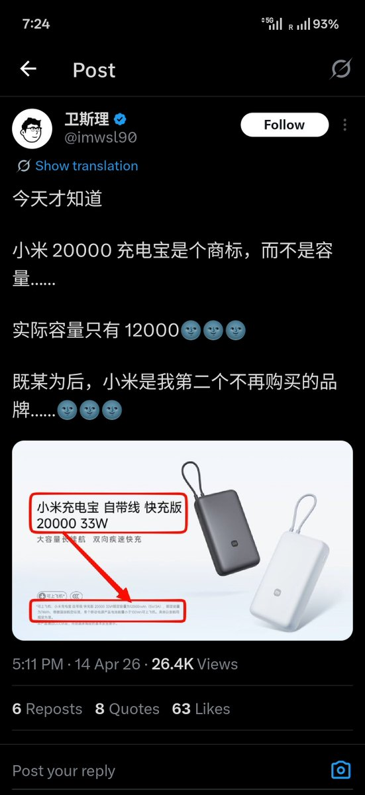

奶昔🥤
@realNyarime
@CyronANNO mAh是毫安，手机用得多，锂电池是有转化损耗的大概是80%
而机场用的是Wh。大多都是靠Wh≤100卡CAAC标准，至于高铁真的没人关心你带多大
那3c也是民航局的规定，燃的都是有3c的

アノ ︎
@CyronANNO
我有厌蠢症
你在市面上甚至找不到直接标注5V下以mA•h作容量的充电宝，甚至手机电池也是按照3.7V标注的
所以我还是希望能落实W•h作为标注的主流，因为mA•h原则上来说根本不是一个容量单位，这么标注只会误导这种物理没学好的人 https://t.co/QJ7kss660k